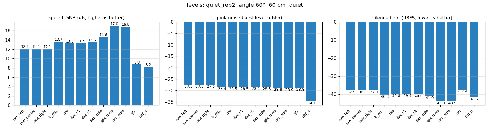
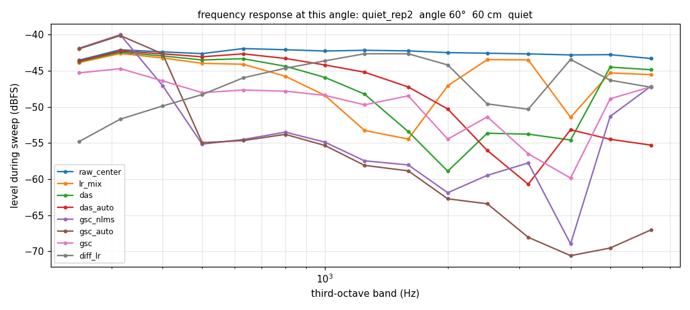
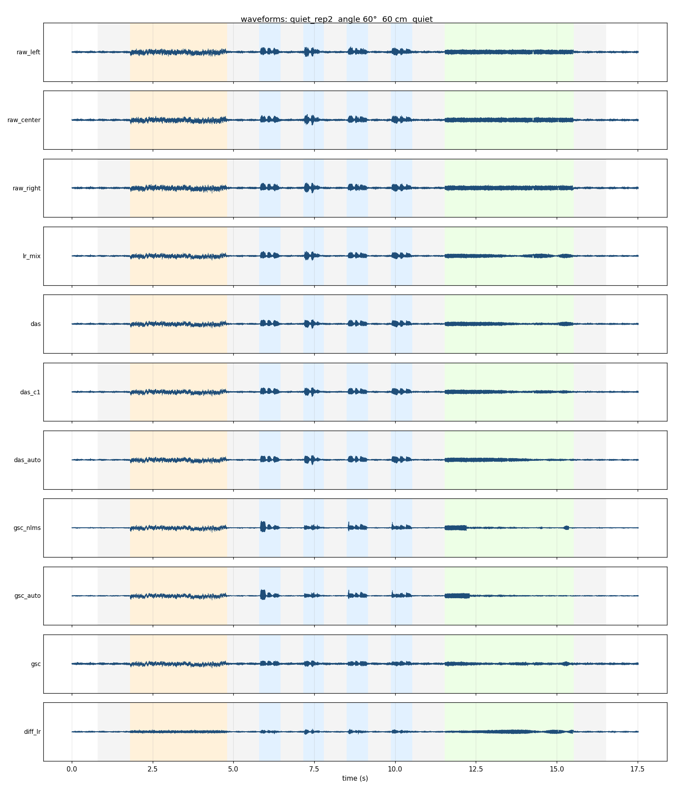
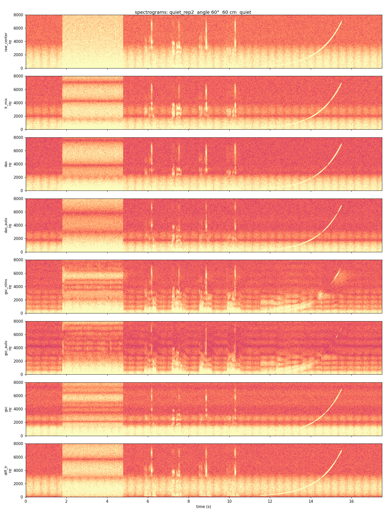

angle 60°, 60 cm, quiet, 17.53 s. Clip offset 0.8 s (confidence 0.929).
Microphones hear the source at +59° (L-R delay 5.62 samples, peak 9.4).
| path | rms_dbfs | speech_snr_db | noise_level_dbfs | silence_floor_dbfs | interf_rejection_db | interf_rejection_lf_db | snr_under_interference_db | speech_preservation | peak | clips |
|---|---|---|---|---|---|---|---|---|---|---|
| raw_left | -29.83 | 12.09 | -27.51 | -37.94 | 0.8971 | 6612 | 0 | |||
| raw_center | -29.83 | 12.09 | -27.54 | -37.96 | 0.9589 | 6441 | 0 | |||
| raw_right | -29.83 | 12.06 | -27.54 | -37.94 | 0.8968 | 7059 | 0 | |||
| lr_mix | -31.4 | 13.65 | -28.45 | -40.31 | 0.9877 | 5565 | 0 | |||
| das | -31.48 | 13.27 | -28.51 | -39.82 | 5443 | 0 | ||||
| das_c1 | -31.54 | 13.33 | -28.54 | -39.87 | 0.993 | 5674 | 0 | |||
| das_c2 | -31.35 | 13.51 | -28.45 | -40.04 | 0.9812 | 5842 | 0 | |||
| das_auto | -31.45 | 14.64 | -28.49 | -40.98 | 0.9802 | 5890 | 0 | |||
| gsc_auto | -32.55 | 16.85 | -28.88 | -43.92 | 0.7763 | 7363 | 0 | |||
| diff_lr | -35.01 | 8.23 | -34.73 | -41.71 | 0.0037 | 3834 | 0 | |||
| gsc | -32.45 | 8.78 | -28.81 | -37.39 | 0.9384 | 4883 | 0 | |||
| gsc_nlms | -32.44 | 17.01 | -28.78 | -43.88 | 0.7641 | 7832 | 0 |



